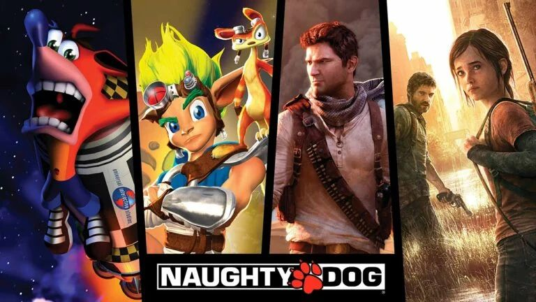

Crash Bandicoot
O mascote não oficial do primeiro PlayStation. A trilogia original vendeu dezenas de milhões de cópias e colocou o estúdio no mapa.
Um dos estúdios mais premiados do mundo e uma das joias da PlayStation Studios. De Crash Bandicoot a The Last of Us, quatro décadas de personagens inesquecíveis.
Fundada em 1984 por Andy Gavin e Jason Rubin, ainda adolescentes, como JAM Software, a empresa adotou o nome Naughty Dog em 1989. O sucesso de Crash Bandicoot transformou o estúdio em um dos principais parceiros da Sony, que o comprou em 2001.
Com Jak and Daxter, Uncharted e The Last of Us, a Naughty Dog redefiniu o que um jogo narrativo pode ser, unindo tecnologia de ponta, atuações capturadas com precisão e roteiros dignos de cinema. Só a série Uncharted passou de 41 milhões de cópias vendidas.
Hoje o estúdio tem como co-presidente Neil Druckmann, diretor e roteirista de The Last of Us, e trabalha em Intergalactic: The Heretic Prophet e em dois novos projetos do universo de TLOU.

O mascote não oficial do primeiro PlayStation. A trilogia original vendeu dezenas de milhões de cópias e colocou o estúdio no mapa.
Mundos abertos sem telas de carregamento no PS2 — uma façanha técnica que antecipou o que viria a seguir.
As aventuras de Nathan Drake trouxeram o cinema de ação para os games. Uncharted 2 e Uncharted 4 foram eleitos Jogo do Ano por diversos veículos.
Dois jogos, remake, remaster, uma série de sucesso na HBO e novos projetos a caminho. A franquia mais premiada do estúdio.
Primeira propriedade intelectual nova desde 2013. Ficção científica com Tati Gabrielle como Jordan A. Mun, uma caçadora de recompensas presa em um planeta isolado.
Dois projetos em estágio inicial que expandem o cânone além de Part I e II. Mais detalhes devem surgir nos próximos anos.
Andy Gavin e Jason Rubin fundam a empresa que seria rebatizada de Naughty Dog em 1989.
O primeiro grande sucesso no PlayStation.
A Sony adquire o estúdio, que lança Jak and Daxter no mesmo ano.
Nasce Nathan Drake. A série termina em 2016 com Uncharted 4 e ganha a expansão The Lost Legacy em 2017.
O estúdio lança aquele que é considerado um dos melhores jogos já feitos.
Recordista de prêmios de Jogo do Ano. Neil Druckmann se torna co-presidente do estúdio.
Revelado no The Game Awards, em dezembro.
No The Last of Us Day, o estúdio confirma dois novos projetos e marca a revelação completa de Intergalactic para 2027.
Revelação completa prevista. A data de lançamento ainda não foi anunciada.